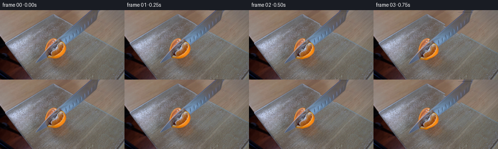
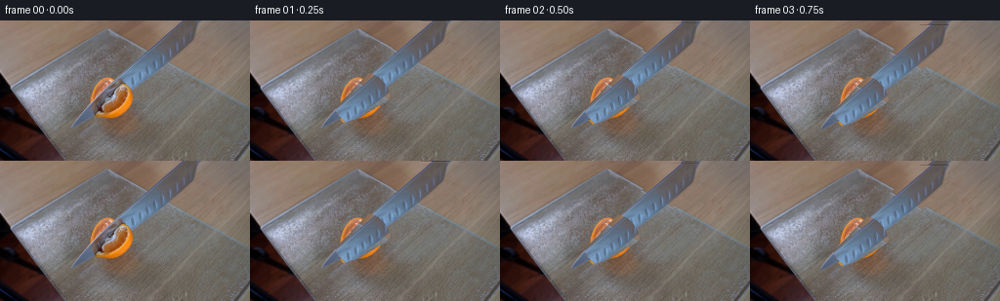
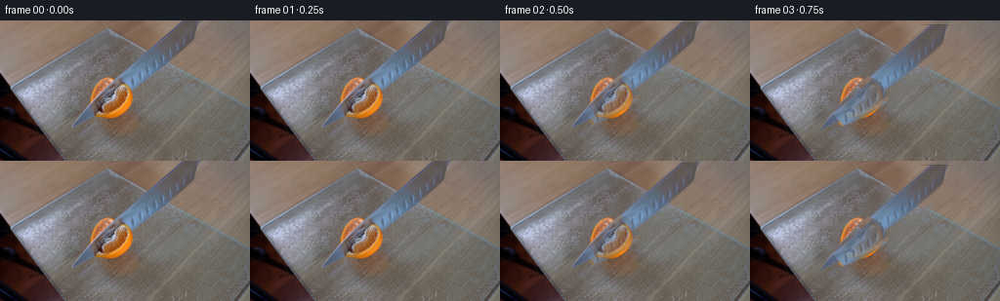
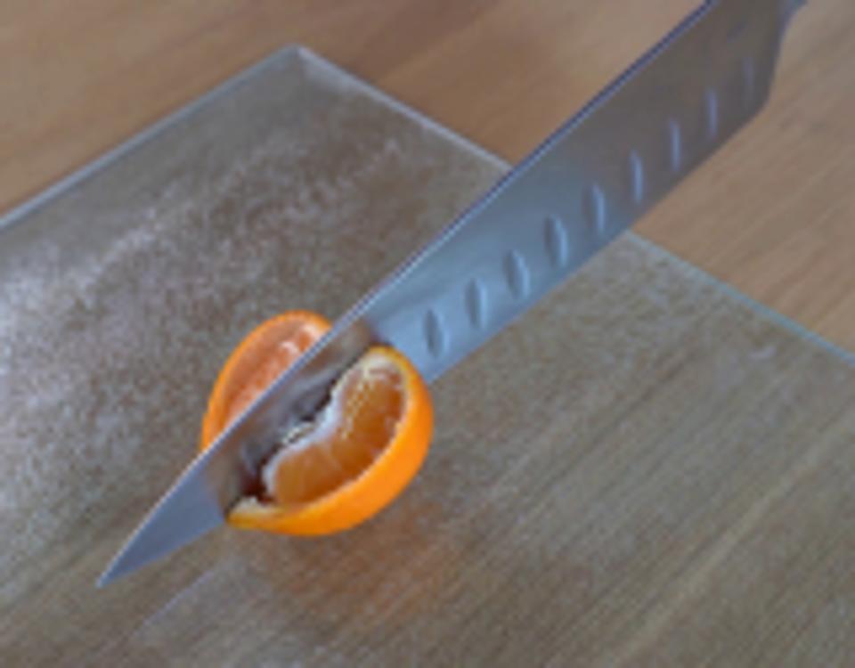
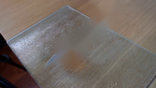
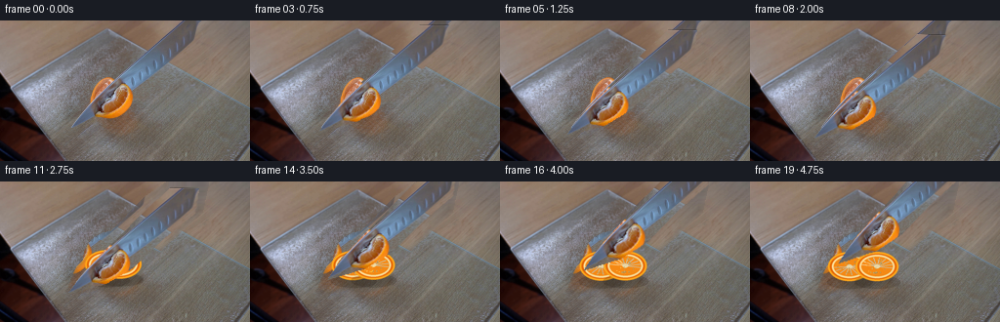
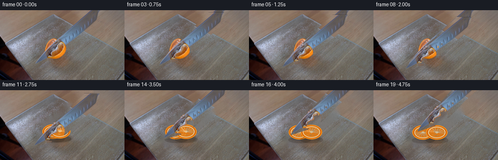
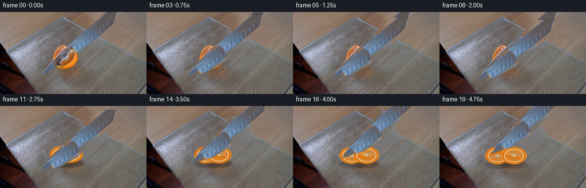
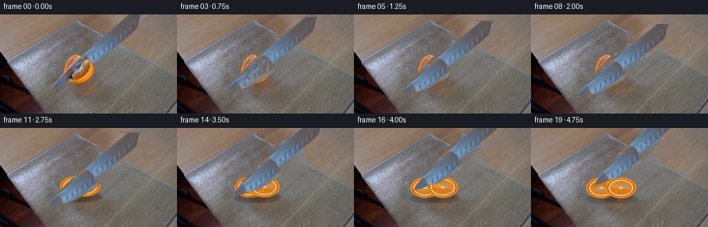

CODING AGENTS AS PIXEL WORLD MODELS
traex/GPT-5.6-Sol · 0042
点击播放 · 原生 RGB 像素
逐轮保存的候选
回放视频、检查图与代码变化。
每份候选均可单独播放。实际图片检查记录在下方工具轨迹中。
候选 01播放与检查图
点击播放 · 原生 RGB 像素


展开代码变化
--- 上一保存版本
+++ 本次保存版本
@@ -0,0 +1,146 @@
+from pathlib import Path
+import math
+import cv2
+import numpy as np
+from PIL import Image, ImageDraw, ImageFilter
+import artifact_io
+
+W,H=256,144
+CASE=Path(__file__).resolve().parent
+src=np.asarray(Image.open(CASE/'first_frame.png').convert('RGB'))
+
+# Geometry of the original knife. The scene is tiny, so all moving layers are
+# rendered at 4x and reduced for pleasantly photographic antialiasing.
+blade=np.array([[73,111],[88,88],[151,23],[177,-2],[204,-2],[201,25],[169,52],[139,82],[112,99]],np.float32)
+# Retain genuine pixels (reflections, hammered dimples, citrus translucency).
+knife_mask=np.zeros((H,W),np.uint8)
+cv2.fillPoly(knife_mask,[blade.astype(np.int32)],255)
+knife_mask=cv2.GaussianBlur(knife_mask,(3,3),.42)
+knife_rgba=np.dstack([src,knife_mask])
+
+# Tangerine extraction, including pale pith but excluding most knife steel.
+hsv=cv2.cvtColor(src,cv2.COLOR_RGB2HSV)
+yy,xx=np.mgrid[:H,:W]
+fruit=((xx>88)&(xx<145)&(yy>53)&(yy<111)&
+ (((hsv[...,0]<35)&(hsv[...,1]>55)&(hsv[...,2]>75)) |
+ ((hsv[...,1]<82)&(hsv[...,2]>120))))
+# constrain to two overlapping halves
+shape=(((xx-113)/25.)**2+((yy-82)/28.)**2<1.0)|(((xx-117)/27.)**2+((yy-84)/23.)**2<1.0)
+fruit &= shape
+fm=(fruit.astype(np.uint8)*255)
+fm=cv2.morphologyEx(fm,cv2.MORPH_CLOSE,np.ones((5,5),np.uint8))
+fm=cv2.dilate(fm,np.ones((3,3),np.uint8),iterations=1)
+# the forward blade covers the fruit's central cut; do not clone that steel into fruit
+fm[(knife_mask>100)&(xx<121)]=0
+fm=cv2.GaussianBlur(fm,(3,3),.6)
+fruit_rgba=np.dstack([src,fm])
+
+# Static plate/table clean plate, painted by texture continuation rather than blur.
+bgr=cv2.cvtColor(src,cv2.COLOR_RGB2BGR)
+remove=np.zeros((H,W),np.uint8)
+cv2.ellipse(remove,(116,82),(29,29),0,0,360,255,-1)
+cv2.fillPoly(remove,[np.array([[69,115],[80,89],[150,17],[175,0],[211,0],[205,29],[142,87],[116,104]],np.int32)],255)
+remove=cv2.dilate(remove,np.ones((5,5),np.uint8),iterations=1)
+bg=cv2.cvtColor(cv2.inpaint(bgr,remove,5,cv2.INPAINT_TELEA),cv2.COLOR_BGR2RGB)
+# Inpaint leaves a soft diagonal trace. Synthesize local board grain from neighboring strips.
+rng=np.random.default_rng(42)
+for y in range(H):
+ for x in range(W):
+ if remove[y,x]:
+ # Glass-board region has fine vertical/diagonal texture; table region wood grain.
+ if y > .55*x+3 and y > -.48*x+68:
+ sx=int(np.clip(x+42,0,W-1)); sy=int(np.clip(y+5,0,H-1))
+ else:
+ sx=int(np.clip(x+52,0,W-1)); sy=int(np.clip(y-4,0,H-1))
+ bg[y,x]=src[sy,sx]
+# blend replacement edge
+soft=cv2.GaussianBlur(remove,(0,0),3.2)[...,None]/255.
+bg=np.clip(src*(1-soft)+bg*soft,0,255).astype(np.uint8)
+
+def affine_layer(rgba, angle=0, dx=0, dy=0, pivot=(116,82), scale=1.0):
+ M=cv2.getRotationMatrix2D(pivot,angle,scale)
+ M[:,2]+=(dx,dy)
+ return cv2.warpAffine(rgba,M,(W,H),flags=cv2.INTER_CUBIC,borderMode=cv2.BORDER_CONSTANT,borderValue=(0,0,0,0))
+
+def composite(base,lay):
+ a=lay[...,3:4].astype(np.float32)/255
+ return np.clip(lay[...,:3]*a+base*(1-a),0,255).astype(np.uint8)
+
+def ellipse_shadow(im,c,axes,alpha=45):
+ layer=np.zeros((H,W,4),np.uint8)
+ cv2.ellipse(layer,c,axes,0,0,360,(35,24,12,alpha),-1,cv2.LINE_AA)
+ layer=cv2.GaussianBlur(layer,(0,0),2)
+ return composite(im,layer)
+
+def draw_half(im,cx,cy,side_angle,open_amt,seed):
+ """Procedural exposed citrus half after the blade has passed."""
+ S=4; canvas=Image.new('RGBA',(W*S,H*S)); d=ImageDraw.Draw(canvas,'RGBA')
+ # low contact shadow
+ d.ellipse(((cx-23)*S,(cy+9)*S,(cx+24)*S,(cy+23)*S),fill=(30,20,9,48))
+ # half-fruit seen obliquely: orange peel rim and juicy radial interior
+ rx=22; ry=15
+ box=((cx-rx)*S,(cy-ry)*S,(cx+rx)*S,(cy+ry)*S)
+ d.ellipse(box,fill=(230,105,4,255),outline=(255,161,25,255),width=2*S)
+ ib=((cx-rx+4)*S,(cy-ry+3)*S,(cx+rx-4)*S,(cy+ry-3)*S)
+ d.ellipse(ib,fill=(244,137,20,255),outline=(255,222,151,245),width=2*S)
+ # eight natural segments with pale membrane spokes
+ for k in range(9):
+ a=side_angle + k*math.pi/8
+ x=cx+16*math.cos(a); y=cy+9*math.sin(a)
+ d.line((cx*S,cy*S,x*S,y*S),fill=(255,226,172,170),width=S)
+ d.ellipse(((cx-3)*S,(cy-2)*S,(cx+3)*S,(cy+2)*S),fill=(245,226,173,230))
+ # pulp highlights / juice vesicles, fixed per half
+ rr=np.random.default_rng(seed)
+ for _ in range(27):
+ a=rr.uniform(0,2*math.pi); q=math.sqrt(rr.uniform())
+ x=cx+q*15*math.cos(a); y=cy+q*8*math.sin(a)
+ r=rr.uniform(.28,.7)*S
+ d.ellipse((x*S-r,y*S-r,x*S+r,y*S+r),fill=(255,205,87,rr.integers(80,175)))
+ canvas=canvas.resize((W,H),Image.Resampling.LANCZOS)
+ arr=np.asarray(canvas.filter(ImageFilter.GaussianBlur(.20))).copy()
+ return composite(im,arr)
+
+def main():
+ frames=[]
+ frames.append(src.copy())
+ for i in range(1,20):
+ t=i/19.0
+ # Knife completes a firm downward/forward slice, pauses, then is lifted away.
+ if t<.43:
+ q=t/.43
+ ease=q*q*(3-2*q)
+ dx=-7*ease; dy=12*ease; ang=-1.8*ease
+ # original fruit stays almost still under the descending blade
+ frame=src.copy()
+ kl=affine_layer(knife_rgba,ang,dx,dy)
+ # The source already contains blade; overlay transformed blade, then mask the old
+ # exposed sliver with sampled fruit coloration for a coherent cutting stroke.
+ frame=composite(frame,kl)
+ else:
+ q=(t-.43)/.57
+ ease=q*q*(3-2*q)
+ frame=bg.copy()
+ # freshly cut pieces separate gently across the glass board
+ sep=2+12*ease
+ drop=1.5*math.sin(min(1,q)*math.pi)
+ frame=ellipse_shadow(frame,(116,int(98+drop)),(29,8),38)
+ # preserve source-fruit texture early, then transition to detailed open faces
+ if q<.18:
+ fl=affine_layer(fruit_rgba,-2*q,dx=-sep*.25,dy=2*q,pivot=(116,83))
+ frame=composite(frame,fl)
+ alpha=min(1,max(0,(q-.03)/.20))
+ proc=frame.copy()
+ proc=draw_half(proc,112-sep*.72,85+2*ease,-.15,sep,110)
+ proc=draw_half(proc,120+sep*.72,84+3*ease,math.pi+.18,sep,220)
+ frame=np.clip(frame*(1-alpha)+proc*alpha,0,255).astype(np.uint8)
+ # knife rises toward upper right after clearing the citrus
+ kdx=-7+24*ease; kdy=12-41*ease; kang=-1.8+3.2*ease
+ kl=affine_layer(knife_rgba,kang,kdx,kdy)
+ frame=composite(frame,kl)
+ # Real locked camera: no image-plane shake or zoom.
+ frames.append(frame)
+ out=np.stack(frames).astype(np.uint8)
+ out[0]=src
+ artifact_io.save(out,CASE)
+
+if __name__=='__main__': main()
候选 02播放与检查图
点击播放 · 原生 RGB 像素

展开代码变化
--- 上一保存版本
+++ 本次保存版本
@@ -8,6 +8,7 @@
W,H=256,144
CASE=Path(__file__).resolve().parent
src=np.asarray(Image.open(CASE/'first_frame.png').convert('RGB'))
+hsv=cv2.cvtColor(src,cv2.COLOR_RGB2HSV)
# Geometry of the original knife. The scene is tiny, so all moving layers are
# rendered at 4x and reduced for pleasantly photographic antialiasing.
@@ -15,11 +16,15 @@
# Retain genuine pixels (reflections, hammered dimples, citrus translucency).
knife_mask=np.zeros((H,W),np.uint8)
cv2.fillPoly(knife_mask,[blade.astype(np.int32)],255)
+# Keep metal, not the orange pixels seen around/behind it at the cutting point.
+metal=(hsv[...,1] < 96).astype(np.uint8)*255
+knife_mask=cv2.bitwise_and(knife_mask,metal)
+knife_mask=cv2.morphologyEx(knife_mask,cv2.MORPH_CLOSE,np.ones((3,3),np.uint8))
+knife_mask=cv2.dilate(knife_mask,np.ones((2,2),np.uint8),iterations=1)
knife_mask=cv2.GaussianBlur(knife_mask,(3,3),.42)
knife_rgba=np.dstack([src,knife_mask])
# Tangerine extraction, including pale pith but excluding most knife steel.
-hsv=cv2.cvtColor(src,cv2.COLOR_RGB2HSV)
yy,xx=np.mgrid[:H,:W]
fruit=((xx>88)&(xx<145)&(yy>53)&(yy<111)&
(((hsv[...,0]<35)&(hsv[...,1]>55)&(hsv[...,2]>75)) |
@@ -42,20 +47,11 @@
cv2.fillPoly(remove,[np.array([[69,115],[80,89],[150,17],[175,0],[211,0],[205,29],[142,87],[116,104]],np.int32)],255)
remove=cv2.dilate(remove,np.ones((5,5),np.uint8),iterations=1)
bg=cv2.cvtColor(cv2.inpaint(bgr,remove,5,cv2.INPAINT_TELEA),cv2.COLOR_BGR2RGB)
-# Inpaint leaves a soft diagonal trace. Synthesize local board grain from neighboring strips.
+# Restore fine sensor/board texture to the otherwise too-smooth inpainted patch.
rng=np.random.default_rng(42)
-for y in range(H):
- for x in range(W):
- if remove[y,x]:
- # Glass-board region has fine vertical/diagonal texture; table region wood grain.
- if y > .55*x+3 and y > -.48*x+68:
- sx=int(np.clip(x+42,0,W-1)); sy=int(np.clip(y+5,0,H-1))
- else:
- sx=int(np.clip(x+52,0,W-1)); sy=int(np.clip(y-4,0,H-1))
- bg[y,x]=src[sy,sx]
-# blend replacement edge
-soft=cv2.GaussianBlur(remove,(0,0),3.2)[...,None]/255.
-bg=np.clip(src*(1-soft)+bg*soft,0,255).astype(np.uint8)
+grain=rng.normal(0,2.2,(H,W,1))
+soft=cv2.GaussianBlur(remove,(0,0),2.0)[...,None]/255.
+bg=np.clip(bg.astype(float)+grain*soft,0,255).astype(np.uint8)
def affine_layer(rgba, angle=0, dx=0, dy=0, pivot=(116,82), scale=1.0):
M=cv2.getRotationMatrix2D(pivot,angle,scale)
@@ -80,22 +76,22 @@
# half-fruit seen obliquely: orange peel rim and juicy radial interior
rx=22; ry=15
box=((cx-rx)*S,(cy-ry)*S,(cx+rx)*S,(cy+ry)*S)
- d.ellipse(box,fill=(230,105,4,255),outline=(255,161,25,255),width=2*S)
+ d.ellipse(box,fill=(208,93,8,255),outline=(238,138,24,255),width=2*S)
ib=((cx-rx+4)*S,(cy-ry+3)*S,(cx+rx-4)*S,(cy+ry-3)*S)
- d.ellipse(ib,fill=(244,137,20,255),outline=(255,222,151,245),width=2*S)
+ d.ellipse(ib,fill=(218,121,25,255),outline=(241,204,139,235),width=2*S)
# eight natural segments with pale membrane spokes
for k in range(9):
a=side_angle + k*math.pi/8
x=cx+16*math.cos(a); y=cy+9*math.sin(a)
- d.line((cx*S,cy*S,x*S,y*S),fill=(255,226,172,170),width=S)
- d.ellipse(((cx-3)*S,(cy-2)*S,(cx+3)*S,(cy+2)*S),fill=(245,226,173,230))
+ d.line((cx*S,cy*S,x*S,y*S),fill=(248,217,166,135),width=S)
+ d.ellipse(((cx-3)*S,(cy-2)*S,(cx+3)*S,(cy+2)*S),fill=(232,205,157,210))
# pulp highlights / juice vesicles, fixed per half
rr=np.random.default_rng(seed)
for _ in range(27):
a=rr.uniform(0,2*math.pi); q=math.sqrt(rr.uniform())
x=cx+q*15*math.cos(a); y=cy+q*8*math.sin(a)
r=rr.uniform(.28,.7)*S
- d.ellipse((x*S-r,y*S-r,x*S+r,y*S+r),fill=(255,205,87,rr.integers(80,175)))
+ d.ellipse((x*S-r,y*S-r,x*S+r,y*S+r),fill=(248,185,72,rr.integers(55,135)))
canvas=canvas.resize((W,H),Image.Resampling.LANCZOS)
arr=np.asarray(canvas.filter(ImageFilter.GaussianBlur(.20))).copy()
return composite(im,arr)
候选 03播放与检查图
点击播放 · 原生 RGB 像素


展开代码变化
--- 上一保存版本 +++ 本次保存版本 @@ -16,13 +16,16 @@ # Retain genuine pixels (reflections, hammered dimples, citrus translucency). knife_mask=np.zeros((H,W),np.uint8) cv2.fillPoly(knife_mask,[blade.astype(np.int32)],255) -# Keep metal, not the orange pixels seen around/behind it at the cutting point. -metal=(hsv[...,1] < 96).astype(np.uint8)*255 -knife_mask=cv2.bitwise_and(knife_mask,metal) -knife_mask=cv2.morphologyEx(knife_mask,cv2.MORPH_CLOSE,np.ones((3,3),np.uint8)) -knife_mask=cv2.dilate(knife_mask,np.ones((2,2),np.uint8),iterations=1) knife_mask=cv2.GaussianBlur(knife_mask,(3,3),.42) -knife_rgba=np.dstack([src,knife_mask]) +# Replace the small citrus reflection/occlusion at the blade tip with neighboring +# steel texture so it does not travel upward with the knife later in the shot. +knife_rgb=src.copy() +Y,X=np.mgrid[:H,:W] +bad=(((X-115)/29.)**2 + ((Y-82)/30.)**2 < 1) +for y,x in zip(*np.where(bad & (knife_mask>100))): + sy=max(0,y-35); sx=min(W-1,x+35) + knife_rgb[y,x]=src[sy,sx] +knife_rgba=np.dstack([knife_rgb,knife_mask]) # Tangerine extraction, including pale pith but excluding most knife steel. yy,xx=np.mgrid[:H,:W]
候选 04播放与检查图
点击播放 · 原生 RGB 像素


展开代码变化
--- 上一保存版本
+++ 本次保存版本
@@ -109,12 +109,15 @@
q=t/.43
ease=q*q*(3-2*q)
dx=-7*ease; dy=12*ease; ang=-1.8*ease
- # original fruit stays almost still under the descending blade
- frame=src.copy()
+ # Reconstruct the covered setup so the old blade does not remain as a
+ # ghost while the real blade advances through the fruit.
+ clean=ellipse_shadow(bg.copy(),(116,99),(26,7),30)
+ clean=composite(clean,fruit_rgba)
kl=affine_layer(knife_rgba,ang,dx,dy)
- # The source already contains blade; overlay transformed blade, then mask the old
- # exposed sliver with sampled fruit coloration for a coherent cutting stroke.
- frame=composite(frame,kl)
+ clean=composite(clean,kl)
+ # first few samples ease away from the exact supplied photograph
+ mix=min(1.0,ease*2.5)
+ frame=np.clip(src*(1-mix)+clean*mix,0,255).astype(np.uint8)
else:
q=(t-.43)/.57
ease=q*q*(3-2*q)
可观测工具轨迹
实际执行的命令与返回图片。
命令 1exit 0
/bin/bash -lc "cat GENERATION_RULES.md && printf '\\n---PROMPT---\\n' && cat prompt.txt"
命令 2exit 0
/bin/bash -lc "find . -maxdepth 2 -type f -printf '%p %s bytes\\n' | sort"
命令 3exit 0
/bin/bash -lc "python3 - <<'PY'
from PIL import Image
im=Image.open('first_frame.png')
im.crop((55,0,215,125)).resize((960,750)).save('.tmp/crop.png')
PY"命令 4exit 0
/bin/bash -lc "sed -n '1,240p' artifact_io.py && python3 - <<'PY'
import cv2
im=cv2.imread('first_frame.png')
print(im.shape)
PY"命令 5exit 0
/bin/bash -lc "cat > .tmp/test.py <<'PY'
import cv2, numpy as np
im=cv2.imread('first_frame.png')
mask=np.zeros(im.shape[:2],np.uint8)
# object fruit
cv2.ellipse(mask,(115,80),(27,25),0,0,360,255,-1)
# knife poly
poly=np.array([[71,112],[174,-3],[207,-3],[201,25],[141,82],[113,100]],np.int32)
cv2.fillPoly(mask,[poly],255)
# use telea
out=cv2.inpaint(im,mask,7,cv2.INPAINT_TELEA)
cv2.imwrite('.tmp/bg.png',out)
cv2.imwrite('.tmp/mask.png',mask)
PY
python3 .tmp/test.py"命令 6exit 0
/bin/bash -lc "python3 - <<'PY'
import cv2,numpy as np
im=cv2.imread('first_frame.png'); hsv=cv2.cvtColor(im,cv2.COLOR_BGR2HSV)
m=((hsv[:,:,0]<30)&(hsv[:,:,0]>2)&(hsv[:,:,1]>90)&(np.indices(hsv.shape[:2])[1]>85)&(np.indices(hsv.shape[:2])[1]<145)&(np.indices(hsv.shape[:2])[0]>48)&(np.indices(hsv.shape[:2])[0]<108)).astype(np.uint8)*255
cs,_=cv2.findContours(m,cv2.RETR_EXTERNAL,cv2.CHAIN_APPROX_SIMPLE)
print([(cv2.contourArea(c),cv2.boundingRect(c)) for c in cs])
out=im.copy(); cv2.drawContours(out,cs,-1,(0,255,0),1)
cv2.imwrite('.tmp/seg.png',out);cv2.imwrite('.tmp/sat.png',m)
PY"命令 7exit 1
/bin/bash -lc "cat > generate.py <<'PY'
from pathlib import Path
import math
import cv2
import numpy as np
from PIL import Image, ImageDraw, ImageFilter
import artifact_io
W,H=256,144
CASE=Path(__file__).resolve().parent
src=np.asarray(Image.open(CASE/'first_frame.png').convert('RGB'))
# Geometry of the original knife. The scene is tiny, so all moving layers are
# rendered at 4x and reduced for pleasantly photographic antialiasing.
blade=np.array([[73,111],[88,88],[151,23],[177,-2],[204,-2],[201,25],[169,52],[139,82],[112,99]],np.float32)
# Retain genuine pixels (reflections, hammered dimples, citrus translucency).
knife_mask=np.zeros((H,W),np.uint8)
cv2.fillPoly(knife_mask,[blade.astype(np.int32)],255)
knife_mask=cv2.GaussianBlur(knife_mask,(3,3),.42)
knife_rgba=np.dstack([src,knife_mask])
# Tangerine extraction, including pale pith but excluding most knife steel.
hsv=cv2.cvtColor(src,cv2.COLOR_RGB2HSV)
yy,xx=np.mgrid[:H,:W]
fruit=((xx>88)&(xx<145)&(yy>53)&(yy<111)&
(((hsv[...,0]<35)&(hsv[...,1]>55)&(hsv[...,2]>75)) |
((hsv[...,1]<82)&(hsv[...,2]>120))))
# constrain to two overlapping halves
shape=(((xx-113)/25.)**2+((yy-82)/28.)**2<1.0)|(((xx-117)/27.)**2+((yy-84)/23.)**2<1.0)
fruit &= shape
fm=(fruit.astype(np.uint8)*255)
fm=cv2.morphologyEx(fm,cv2.MORPH_CLOSE,np.ones((5,5),np.uint8))
fm=cv2.dilate(fm,np.ones((3,3),np.uint8),iterations=1)
# the forward blade covers the fruit's central cut; do not clone that steel into fruit
fm[(knife_mask>100)&(xx<121)]=0
fm=cv2.GaussianBlur(fm,(3,3),.6)
fruit_rgba=np.dstack([src,fm])
# Static plate/table clean plate, painted by texture continuation rather than blur.
bgr=cv2.cvtColor(src,cv2.COLOR_RGB2BGR)
remove=np.zeros((H,W),np.uint8)
cv2.ellipse(remove,(116,82),(29,29),0,0,360,255,-1)
cv2.fillPoly(remove,[np.array([[69,115],[80,89],[150,17],[175,0],[211,0],[205,29],[142,87],[116,104]],np.int32)],255)
remove=cv2.dilate(remove,np.ones((5,5),np.uint8),iterations=1)
bg=cv2.cvtColor(cv2.inpaint(bgr,remove,5,cv2.INPAINT_TELEA),cv2.COLOR_BGR2RGB)
# Inpaint leaves a soft diagonal trace. Synthesize local board grain from neighboring strips.
rng=np.random.default_rng(42)
for y in range(H):
for x in range(W):
if remove[y,x]:
# Glass-board region has fine vertical/diagonal texture; table region wood grain.
if y > .55*x+3 and y > -.48*x+68:
sx=int(np.clip(x+42,0,W-1)); sy=int(np.clip(y+5,0,H-1))
else:
sx=int(np.clip(x+52,0,W-1)); sy=int(np.clip(y-4,0,H-1))
bg[y,x]=src[sy,sx]
# blend replacement edge
soft=cv2.GaussianBlur(remove,(0,0),3.2)[...,None]/255.
bg=np.clip(src*(1-soft)+bg*soft,0,255).astype(np.uint8)
def affine_layer(rgba, angle=0, dx=0, dy=0, pivot=(116,82), scale=1.0):
M=cv2.getRotationMatrix2D(pivot,angle,scale)
M[:,2]+=(dx,dy)
return cv2.warpAffine(rgba,M,(W,H),flags=cv2.INTER_CUBIC,borderMode=cv2.BORDER_CONSTANT,borderValue=(0,0,0,0))
def composite(base,lay):
a=lay[...,3:4].astype(np.float32)/255
return np.clip(lay[...,:3]*a+base*(1-a),0,255).astype(np.uint8)
def ellipse_shadow(im,c,axes,alpha=45):
layer=np.zeros((H,W,4),np.uint8)
cv2.ellipse(layer,c,axes,0,0,360,(35,24,12,alpha),-1,cv2.LINE_AA)
layer=cv2.GaussianBlur(layer,(0,0),2)
return composite(im,layer)
def draw_half(im,cx,cy,side_angle,open_amt,seed):
\"\"\"Procedural exposed citrus half after the blade has passed.\"\"\"
S=4; canvas=Image.new('RGBA',(W*S,H*S)); d=ImageDraw.Draw(canvas,'RGBA')
# low contact shadow
d.ellipse(((cx-23)*S,(cy+9)*S,(cx+24)*S,(cy+23)*S),fill=(30,20,9,48))
# half-fruit seen obliquely: orange peel rim and juicy radial interior
rx=22; ry=15
box=((cx-rx)*S,(cy-ry)*S,(cx+rx)*S,(cy+ry)*S)
d.ellipse(box,fill=(230,105,4,255),outline=(255,161,25,255),width=2*S)
ib=((cx-rx+4)*S,(cy-ry+3)*S,(cx+rx-4)*S,(cy+ry-3)*S)
d.ellipse(ib,fill=(244,137,20,255),outline=(255,222,151,245),width=2*S)
# eight natural segments with pale membrane spokes
for k in range(9):
a=side_angle + k*math.pi/8
x=cx+16*math.cos(a); y=cy+9*math.sin(a)
d.line((cx*S,cy*S,x*S,y*S),fill=(255,226,172,170),width=S)
d.ellipse(((cx-3)*S,(cy-2)*S,(cx+3)*S,(cy+2)*S),fill=(245,226,173,230))
# pulp highlights / juice vesicles, fixed per half
rr=np.random.default_rng(seed)
for _ in range(27):
a=rr.uniform(0,2*math.pi); q=math.sqrt(rr.uniform())
x=cx+q*15*math.cos(a); y=cy+q*8*math.sin(a)
r=rr.uniform(.28,.7)*S
d.ellipse((x*S-r,y*S-r,x*S+r,y*S+r),fill=(255,205,87,rr.integers(80,175)))
arr=np.asarray(canvas.filter(ImageFilter.GaussianBlur(.35*S))).copy()
return composite(im,arr)
def main():
frames=[]
frames.append(src.copy())
for i in range(1,20):
t=i/19.0
# Knife completes a firm downward/forward slice, pauses, then is lifted away.
if t<.43:
q=t/.43
ease=q*q*(3-2*q)
dx=-7*ease; dy=12*ease; ang=-1.8*ease
# original fruit stays almost still under the descending blade
frame=src.copy()
kl=affine_layer(knife_rgba,ang,dx,dy)
# The source already contains blade; overlay transformed blade, then mask the old
# exposed sliver with sampled fruit coloration for a coherent cutting stroke.
frame=composite(frame,kl)
else:
q=(t-.43)/.57
ease=q*q*(3-2*q)
frame=bg.copy()
# freshly cut pieces separate gently across the glass board
sep=2+12*ease
drop=1.5*math.sin(min(1,q)*math.pi)
frame=ellipse_shadow(frame,(116,int(98+drop)),(29,8),38)
# preserve source-fruit texture early, then transition to detailed open faces
if q<.18:
fl=affine_layer(fruit_rgba,-2*q,dx=-sep*.25,dy=2*q,pivot=(116,83))
frame=composite(frame,fl)
alpha=min(1,max(0,(q-.03)/.20))
proc=frame.copy()
proc=draw_half(proc,112-sep*.72,85+2*ease,-.15,sep,110)
proc=draw_half(proc,120+sep*.72,84+3*ease,math.pi+.18,sep,220)
frame=np.clip(frame*(1-alpha)+proc*alpha,0,255).astype(np.uint8)
# knife rises toward upper right after clearing the citrus
kdx=-7+24*ease; kdy=12-41*ease; kang=-1.8+3.2*ease
kl=affine_layer(knife_rgba,kang,kdx,kdy)
frame=composite(frame,kl)
# Real locked camera: no image-plane shake or zoom.
frames.append(frame)
out=np.stack(frames).astype(np.uint8)
out[0]=src
artifact_io.save(out,CASE)
if __name__=='__main__': main()
PY
python3 generate.py"命令 8exit 0
/bin/bash -lc 'python3 generate.py'
命令 9exit 0
/bin/bash -lc "sed -n '1,55p' generate.py"
命令 10exit 0
/bin/bash -lc "python3 generate.py && python3 - <<'PY'
import numpy as np
from PIL import Image
fs=[np.array(Image.open(f'frames/{i:02}.png')) for i in range(20)]
print(len(fs),fs[0].shape,fs[0].dtype,'frame0 exact',np.array_equal(fs[0],np.array(Image.open('first_frame.png').convert('RGB'))))
PY"命令 11exit 0
/bin/bash -lc 'python3 generate.py'
命令 12exit 0
/bin/bash -lc "python3 generate.py && python3 - <<'PY'
from PIL import Image
import numpy as np
assert np.array_equal(np.array(Image.open('frames/00.png')),np.array(Image.open('first_frame.png')))
z=np.load('pixels.npz')['pixels']; print(z.shape,z.dtype)
PY"视觉工具实际返回图片 1

视觉工具实际返回图片 2

视觉工具实际返回图片 3

视觉工具实际返回图片 4

视觉工具实际返回图片 5

视觉工具实际返回图片 6

视觉工具实际返回图片 7

保存候选 4 份；完成命令 12 次；可验证图片返回 7 张。原始 API 响应与完整日志保留在本地。